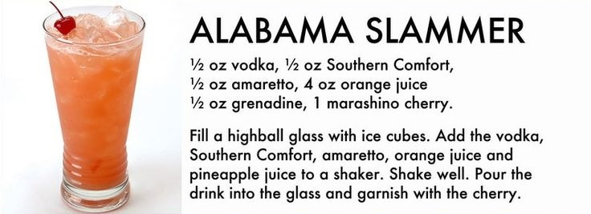

Alabama Slammer

Ingredients:
- 1 highball glass
- 1 shaker
- Ice cubes
- 1/2 Oz vodka
- 1/2 Oz Southern Comfort
- 1/2 Oz amaretto
- 4 Oz orange juice
- 1/2 grenadine
- 1 marashino cherry
Directions:
- Fill a highball glass with ice cubes.
- Add the vodka, Southern Comfort, amaretto, orange juice, and
pineapple juice to the shaker.
- Shake well!
- Pour the drink into the glass.
- Garnish with the cherry, and enjoy!